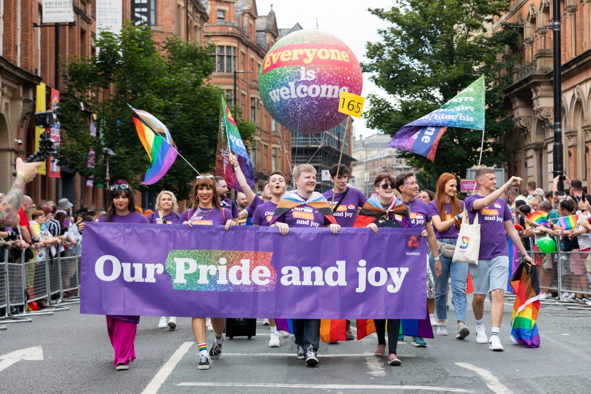

The Manchester Pride Festival is a festival that celebrates the LGBTQIA+ community, being run by the noneprofit organisation Manchester Pride
Surpringly this event takes up the entire August bank holiday weekend,unlike the expected June date the name suggests it has.
Expect a lot of music at this fstival if you attend the Superbia,and one big parade down the streets.
The event started in 1988 ,20th of Feb to be precise, when over 20,000 people took part in 28 protests.